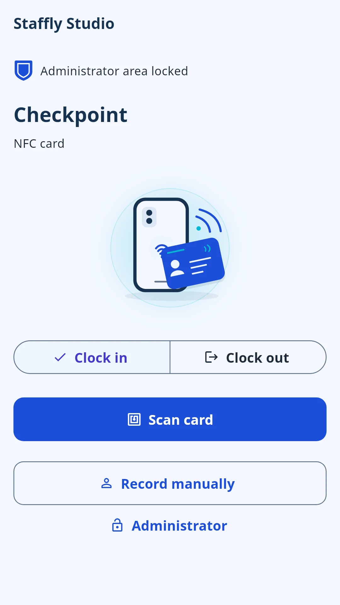
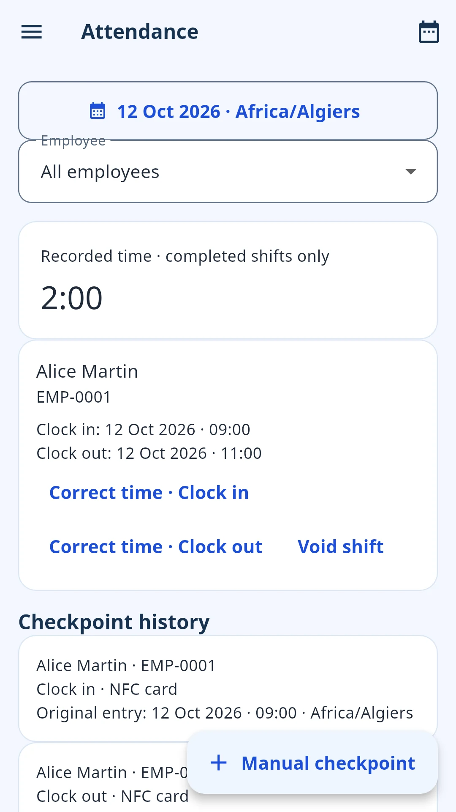
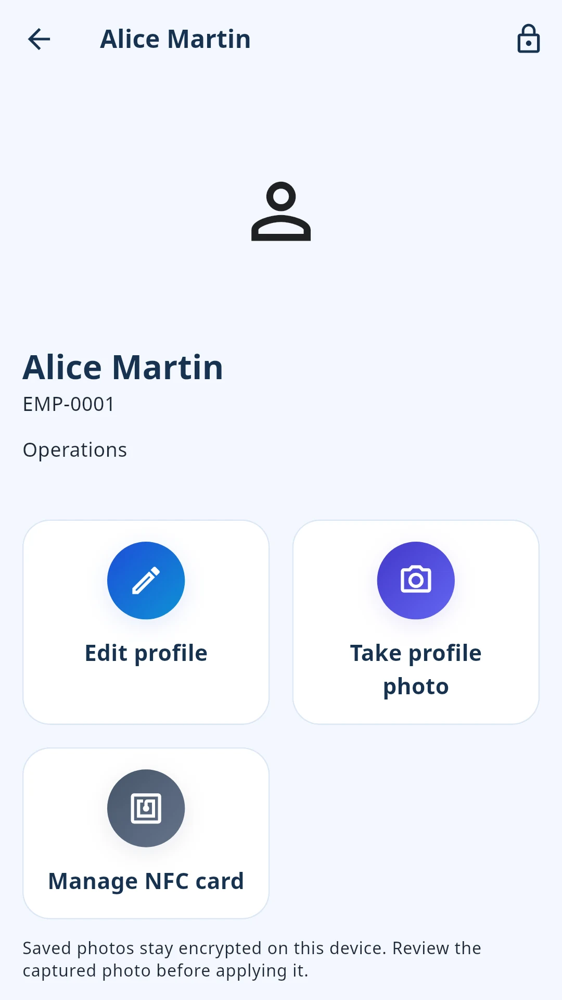

Simplify daily attendance
From the first clock-in to the last break, keep the working day easy to follow.
Manage staff, attendance, leave and gross payroll from one shared workplace device—even when the internet isn’t available.


From the first clock-in to the last break, keep the working day easy to follow.
People, schedules and leave. Everything in its place, on one workplace device.
Turn everyday records into clear exports, gross payroll and useful documents.
Practical staff management, without the complicated infrastructure.
Keep the details that matter together, so you can focus on the people behind them.

A simple checkpoint. A clearer picture of the day. Use compatible NFC cards or enter checkpoints manually.
Organize weekly schedules and employee assignments, with exceptions when plans change.
Keep leave decisions, calendars and balances together, with flexibility for your business.
Prepare gross wages with hourly, daily or monthly rates, and keep a record of payments already made.
Bring business records out of the app when you need to review, save or share them.
Set up your workplace once. Keep the everyday essentials close.
Choose your business details, language, currency and timezone.
Add your employees and choose NFC cards or manual checkpoints.
Review attendance, manage leave and export the reports you need.
Optional personal access gives employees a clear view of their own working time—not everyone else’s.
Refresh your records near the workplace device using Bluetooth and Wi-Fi. No router is required. Your latest downloaded records remain available afterward.
Practical protection and local control, without making the internet part of every working day.
Use supported device authentication or a Staffly PIN.
Staff records and profile photos are encrypted on your device.
Keep password-protected backups under your control.
Readable exports you choose to save or share.
Core HR workflows work offline. Ads, purchases and subscription verification require internet.
All the HR essentials are included. Pro simply removes the advertisements.
Billing and renewal details are displayed before purchase.
The practical details, before you get started.
Yes. Core HR workflows work offline. Ads, purchases and subscription verification require an internet connection.
No. One shared workplace Android phone or tablet can handle checkpoints. Personal Employee Access is optional and is coming in the next release.
No. You can enter checkpoints manually. Compatible NFC cards offer another convenient option when your workplace device supports NFC.
Yes. Export attendance, leave, work schedules and payroll to Excel. Selected CSV exports and a dedicated generated-document library are also available.
No. Staffly calculates gross wages and records payments already made. It does not calculate statutory taxes or contributions, or transfer money.
Staff records and photos are stored in encrypted local application storage on your workplace device. You control password-protected backups and choose which readable exports to save or share.
No. Employee Access is prepared for the next Android release. Refreshing permitted records requires being near the workplace device, using Bluetooth and Wi-Fi. Previously downloaded records can be read later offline.
Android is the currently promoted platform. There is no confirmed iPhone release date.
Staffly Pro has the same HR features as Staffly, without advertisements. Monthly or yearly subscription plans, current prices, billing and renewal details are shown in the app before purchase.
A practical working day starts with Staffly.
Get Staffly on Google PlayAvailable for Android